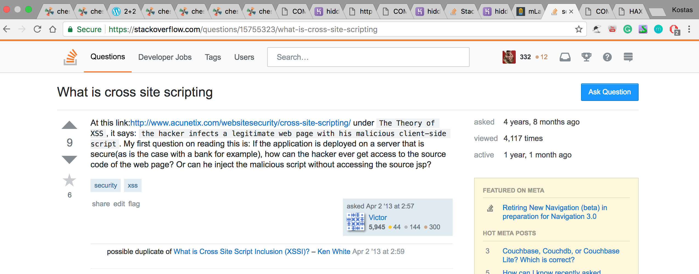

Introduction
In this assignment, I assessed the security/privacy of the Landmark web application. Some issues are illustrated, and solutions are provided for the backend of this application
Methodology and Findings
To exploit this website's vulnerabilities I used curl, as well as the bash shell language (to be able to deliver multiple requests per second consistently). I first noticed that there is no protection against injections in the post info. I used this to apply cross-site-scripting. After realizing that the server has no maximum requests from a client, I wrote a script that swarms the website with post requests making it slow and clumpsy.
Issues Found
Issue 1: No check for user input
-
Location: https://hidden-taiga-87881.herokuapp.com/
File index.js never checks for questionable user input.
The issue is quite important, as it is very easy to apply cross-site scripting and manipulate the page in any way one wants.
Here you can see a redirection happening when one opens the site:
LOADING PAGE:
REDIRECTION:

- To solve this, one could add a function that selects or special characters (needed for scripts) and removes them from user input, and/or keep maximum username size small. Both these should be inforced on back-end to avoid proxy attacks.
Issue 2: No maximum number of requests
- Location: Website page: https://hidden-taiga-87881.herokuapp.com/sendLocation
- This issue is quite important but nowhere near as important as the previous one.
-
With the following script, you are able to fill the database with many entries, slow down service, and (with a lot of time) reach the data limit.
MALICIOUS SCRIPT:
RESULT AFTER A FEW MINUTES:
-
To solve this problem, one could make the server ignore multiple requests from the same IP address.
Conclusion
This document addressed the security/privacy issues in the given application. The vulnerabilities that were found were cross-site scripting, as well as no checking for repeated POST requests. Especially the first vulnerability could be taken advantage of in a large number of ways. However, by no means does this mean there were no more vulnerabilities in the application. The suggestion that I would make is to never trust user input, and try to regulate it as much as possible (e.g. through maximum size, etc.
References
https://tuftsdev.github.io/WebProgramming/
http://www.veracode.com/security/xss
https://www.cs.tufts.edu/comp/40/labs/sh-lab